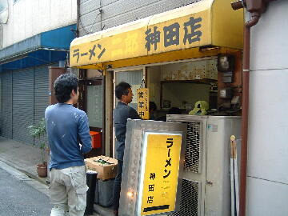

中央区 日本橋 本石町 4-4-17
日・祝
11：00〜19：00

店員は、男性二名。
白コショウ（ギャバン）、トウガラシ。
レンゲ、ティッシュ、名刺、全部有。
BGMは、有線。
トッピングは、フツウ。
なぜか「ヤサイダブル」とコールをする人が多い。
旧 ラーメン二郎 神田店
「ラーメン 神田店」でヤフー検索
「ラーメン 神田店」でヤフーリアルタイム検索
「ラーメン 神田店」でグーグル検索
普通盛 ヤサイダブルニンニクダブル
麺は、二郎にしては極細。ストレート。
ぶたは、小ぶり、トロトロ。角煮を薄切りにしたような、ぶた。
スープは、薄め、甘辛、表面に背脂（細）が浮いていた。
ヤサイは、モヤシ8：キャベツ2の割合。柔らか目でフニャ。
ニンニクは、細かく刻まれた生ニンニク。
つけ麺 ヤサイダブルニンニクダブル
トッピングはラーメンと同じ。
タレの丼には、タレが大きめの丼にナミナミと。細切れのチャーシューが数個入ってた。
麺の皿には、ヤサイ、チャーシュー、煮玉子半分。ニンニクはこっち。あつもりも可能。
ＰＣ店